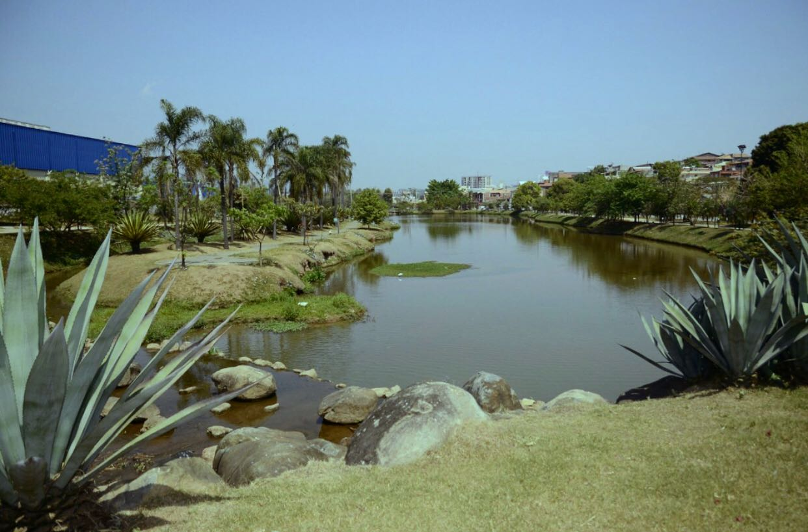

PARQUE BOTÂNICO TULIPAS PROFESSOR AZIZ AB'SABER
Com área de 125 mil m², o Parque Botânico Tulipas tem academia, quadra poliesportiva, quadras de areia, playground, 2 km de ciclovias, 3 km para caminhadas, cinco cachoeiras, cinco lagoas, dez pontes de madeira, 15 quiosques, biblioteca (para os usuários poderem fazer suas leituras junto à natureza), rede wi-fi gratuita, duas portarias e túnel de ligação entre duas áreas. O espaço é todo cercado.
Não é permitida a entrada de animais domésticos.
- Endereço: Rua Congani Bocalão, 34 – Jardim das Tulipas
- Telefone: (11) 4581-6000
- Facebook: Parque Botânico Tulipas Profº Aziz Ab Saber
- Horário de Funcionamento: Segunda à sexta das 7h às 16h. Sábado, domingo e feriado das 7h às 17h
PARQUE BOTÂNICO TULIPAS PROFESSOR AZIZ AB'SABER
O Parque Botânico Tulipas, está localizado no Endereço: Rua Congani Bocalão, 34 – Jardim das Tulipas.